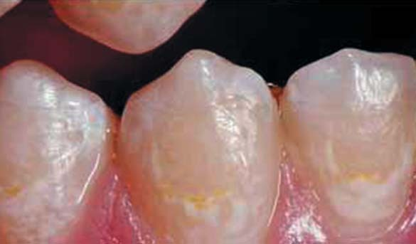
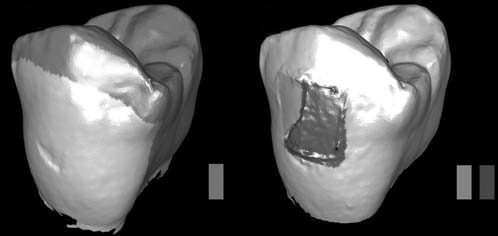
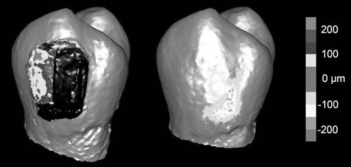
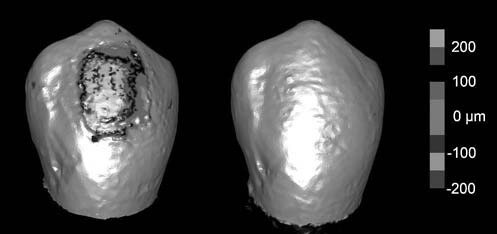

Наука · журнал «ДентАрт» 2015 №4
Втрата емалі після зняття керамічних брекетів: кількісний аналіз in vitro
ENAMEL LOSS AFTER CERAMIC BRACKET REMOVAL: QUANTITATIVE ANALYSIS IN VITRO

Ортодонтія як специфічна і незалежна галузь стоматології в минулому столітті зазнала значних змін, супутніх її прогресу як самостійної спеціальності. Одним із найбільш значних нововведень було використання емалевих протравлюючих агентів і адгезивних систем для фіксації брекетів на поверхні зубів. До цього відкриття єдиним надійним способом фіксації брекетів було легування кожного окремого зуба в дузі за допомогою металевого дроту.
Хоча введення методу безпосередньої адгезивної фіксації брекетів було важливим етапом у ході комплексного прогресу, проте новий підхід вимагав вирішення нових виниклих завдань і практичних питань. З одного боку, завдяки сильній адгезії брекетів забезпечується їх щільний зв'язок зі структурою зуба, який запобігає втраті конструкцій під час функціонування, але з другого — занадто висока сила взаємозв'язку провокує ризик пошкодження поверхні зубів під час їх зняття. Ця проблема є невирішеною і досі залишається актуальним клінічним питанням в ортодонтії.
Особливу увагу привертає питання порушення структури емалі під час зняття керамічних брекетів, які стали популярними з 1980 року, передусім через свої естетичні характеристики, якими металеві брекети похвалитися просто не могли. Однак деякі з керамічних брекетів першого покоління провокували значне пошкодження емалі під час дебондингу, а дослідження in vitro довели, що 63,3% структури емалі на межі контакту з брекетами пошкоджуються під час їх зняття. Звідси висновок: пошкодження емалі під час зняття ортодонтичних елементів — значне. Однак слід зазначити, що з моменту їх появи керамічні брекети весь час поліпшувалися, а виробники нових аналогів запевняють, що нинішнє їх покоління безпечне для зняття і ризик пошкодження емалі зведено до мінімуму. Однак кількісних даних, які б підтверджували ці рекламні слогани, поки що недостатньо.
Сучасні технології дозволяють провести кількісне вимірювання невеликих змін поверхні зубів, які можуть виникнути під час етапу зняття брекетів. У випадку з металевими брекетами після їх видалення на поверхні зуба були виявлені залишки адгезиву. Видалення адгезиву провокувало втрату емалі на глибину до 20-50 мкм. Метою цього дослідження було вивчення двох систем керамічних брекетів, а також проведення кількісної оцінки змін поверхні емалі після процесу зняття. Для візуалізації поверхні зубів перед фіксацією брекетів, після їх видалення, а також після повного очищення контактуючої поверхні використовували тривимірний (3D) оптичний сканер, який допоміг об'єктивізувати кількісні зміни структури емалі.
Матеріали і методи
Для дослідження було відібрано сорок премолярів, екстрагованих через різні ортодонтичні причини у клініці щелепно-лицьової хірургії (процедура виконувалася за попередньою згодою Експертної ради 13-02375-хm). Зуби були попередньо досліджені на наявність ознак пошкодження емалі, карієсу, зубного каменю або реставрацій, і якщо такі вдавалося знайти — зразки виключалися з дослідження. Потім відібрані зразки промивали водою і замочували в 10% розчині формаліну ацетату до моменту безпосереднього використання.
У ході дослідження поверхню зубів протравлювали 38% розчином фосфорної кислоти (Реліанс Ортодонтікс Продактс/Reliance Orthodontic Products) протягом 30 секунд, промивали і висушували до сніжно-білого вигляду емалі. Такий відтінок емалі після протравлювання і висушування підтверджувався за допомогою оптичного сканера. Початкові скани зубів були отримані за допомогою 3D-оптичного сканера Комет x5/COMET x5 (Штайнбіхлер Візіон Системс/Steinbichler Vision Systems). Його точність — 5 мкм, а просторова роздільна здатність (відстань між досліджуваними точками) — 60 мкм.
Адгезив Трансбонд ІксТі/Transbond XT (3M Юнітек/Unitek) наносили на лицьову поверхню зубів, після чого висушували повітрям. Після цієї процедури на поверхні зубів фіксували дві різні системи брекетів за допомогою ортодонтичного адгезиву Трансбонд ІксТі/Transbond XТ (3M Юнітек/Unitek). Для імітації клінічних умов брекети фіксували помірним тиском за допомогою ручного інструменту до тих пір, доки вони не були повністю зафіксовані. Усі надлишки адгезиву видаляли, щоб гарантувати абсолютно чисту поверхню емалі навколо брекета. Адгезив полімеризували протягом 45 секунд галогеновою лампою (ВІП Джуніор/VIP Junior, Біско/BISCO).
Зуби розподілили на дві експериментальні групи залежно від типу використовуваних брекетів. У групі 1 (19 зубів) були зуби із зафіксованими металевими армованими полікристалічними керамічними брекетами (Клеріті/Clarity, ЗМ Юнітек/3M Unitek), виготовленими з білого опакового матеріалу. У другій групі був 21 зразок, на поверхні яких фіксували чисті монокристалічні керамічні брекети (Інспайр-Айс/Inspire-ICE, Ормко Оранж/Ormco Orange). Після фіксації брекетів зуби поміщали в темну кондиціоновану камеру з кімнатною температурою на період 7 днів до повної полімеризації адгезиву.
Полікристалічні керамічні брекети видаляли за допомогою щипців Вейнгарта (Орто-Плі/Ortho-Pli), а монокристалічні — за допомогою спеціального пластикового інструменту для дебондингу (Ормко/Ormco), дотримуючись протоколів виробника. Після видалення брекетів реєстрували кількість від'єднаних фрагментів конструкцій, а також кількість фрагментів брекетів, які залишилися зафіксованими до поверхні зубів після процедури зняття. Після цього провели друге сканування поверхонь усіх зубів, щоб оцінити зміни безпосередньо після відклеювання. Залишки адгезиву на зубах також оцінювали візуально з використанням модифікованого індексу залишкової кількості бонду (Індекс залишків адгезиву/Adhesive Remnant Index — ARI). Цей показник часто використовується в дослідженнях, оскільки він допомагає оцінити ті локалізації, в яких процедура бондингу виявилася неефективною. Усі залишки адгезиву були видалені за допомогою швидкісного наконечника і твердосплавного бору (H48LQ, Комет). Після цього провели сканування втретє і востаннє, щоб зафіксувати зміни після повного очищення.
Усі скани були збережені в стандартному форматі STL і експортовані в програмне забезпечення Кумулс/Cumulus (Відділення університету Міннесота/Regents of the University of Minnesota). Для визначення змін на поверхні емалі на місці фіксації брекета скани зубів після відклеювання і скани після повного очищення були накладені один на одного і на базовий скан. Незаймані інтактні поверхні зубів базового скана використовували як опорні орієнтувальні зони для точного вирівнювання зображень (фото 1А) при суперімпозиції. Алгоритм вирівнювання, закладений у самому програмному забезпеченні Кумулс/Cumulus, допоміг звести до мінімуму середньоквадратичну різницю при зіставленні незмінених поверхонь (неушкоджених після відклеювання брекетів) при суперімпозиції базового і наступних сканів. Так що принаймні 90% релевантних точок орієнтувальних поверхонь вписувалися в розмірну точність сканера, рівну 5 мкм. Після того, як скани були зіставлені, зміни поверхні емалі візуалізували за допомогою лінійної колірної шкали. Таким чином вдалося визначити ділянки, площа поверхні яких збільшилася (за рахунок залишків адгезиву), і поверхні, площа яких зменшилася (за рахунок втрати емалі).
За контурами ділянок фіксації брекетів були також виміряні зміни обсягів ураженої емалі і глибини самого ураження. Ці процедури провадилися з використанням алгоритмів Кумулс/Cumulus. Ділянки, на яких було зареєстровано як втрату об'єму тканин (за рахунок втрат емалі), так і його збільшення (за рахунок залишків адгезиву), були проаналізовані окремо — для того, щоб уникнути ефекту нівелювання об'єктивних показників змін за рахунок накладення не пов'язаних між собою причин змін фізичних параметрів поверхні (фото 1Б). Показники об'єму і результати вимірювання глибини ураження при використанні двох різних брекет-систем порівнювали з використанням t-тесту, а показники ARI зіставляли за допомогою критерію Манна-Уїтні (рівень значущості дорівнював 0,05).

Фото 1. (А) Скани після відшарування і скани після повного очищення були зіставлені з початково отриманим базовим зображенням з використанням оклюзійної, проксимальної і язикової поверхонь як орієнтовних зон для суперімпозиції (виділені жовтим). (Б) Обсяг і глибина ураження емалі (зона 1), як і ділянка із залишками адгезиву (зона 2), були проаналізовані незалежно, щоб уникнути нівелювання об'єктивних параметрів за рахунок різної природи змін поверхні емалі (для інтерпретації колірної гами читач повинен ознайомитися з веб-версією програми).
Результати
Металеві армовані полікристалічні керамічні брекети були зафіксовані на 19 зубах, а монокристалічні керамічні брекети — на 21. Однак два зразки полікристалічних керамічних брекетів і два монокристалічних були виключені з дослідження через неповне сканування зони фіксації, в результаті чого розмір вибірки першої групи скоротився до 17 зразків, а другої — до 19. Відклеювання брекетів провокує втрату емалі на поверхні зуба або ж утворення невеликої кількості залишків адгезиву в місці з'єднання.
На п'яти зубах з групи із зафіксованими полікристалічними керамічними брекетами і на одному з групи із монокристалічними керамічними брекетами було зареєстровано втрату емалі після видалення брекета і перед процедурою очищення. Глибина ураження емалі після відклеювання (середня глибина) становила 21 мкм для полікристалічних керамічних брекетів і 33 мкм для монокристалічних. Об'єм ушкодженої емалі у першій групі становив 144 мкм³, а в другій — 36 мкм³.
У результаті 3D-сканування було виявлено, що в першій групі на 16 зубах є залишки адгезиву (тобто на всіх зубах, крім одного). Середня товщина залишкового шару адгезиву в групі полікристалічних брекетів становила 188 мкм, в той час як у другій групі вона не перевищувала 120 мкм. Різниця показників середньої товщини резидуального бондингового шару між двома системами брекетів була статистично значущою (t-тест, p = 0,0164), але різниця об'ємних показників залишків адгезиву статистичною значущістю вже не вирізнялася (t-тест, p = 0,2381).
За допомогою класифікації ARI (Індексу залишків адгезиву) було встановлено, що кількість залишків адгезиву після процедури відклеювання була значно вищою в групі монокристалічних керамічних брекетів у порівнянні з полікристалічними (тест Манна-Уїтні; Р = 0,016): два зуби відповідали критерієві 2 — залишок більш ніж половини шару адгезиву на зубі, а в 17 випадках ситуацію було оцінено параметром 3 — весь шар адгезиву залишився на зубі. При використанні ж полікристалічних брекетів у 2-х випадках кількість залишкового адгезиву оцінювалася критерієм 0, у 6 — критерієм 1, в 1 — критерієм 2 і у 8 — критерієм 8 (у відповідністю зі шкалою ARI).
Залишки адгезиву видалені за допомогою твердосплавного бору. Тільки на двох зубах з групи полікристалічних брекетів і на одному з групи монокристалічних залишки бонду було виявлено навіть після етапу очищення. При цьому середня товщина їх шару в першій групі становила 16 мкм, а в другій — 15 мкм. Однак у процесі очищення також ненавмисно було видалено невелику кількість емалі, в результаті чого середня втрата емалі (тобто глибина ураження) становила вже 28 мкм для полікристалічних керамічних брекетів і 18 мкм — для монокристалічних. Показники втрат емалі після етапу очищення значно відрізнялися між двома моделями брекетів як за об'ємом (t-тест, p = 0,0245), так і за середньою глибиною ураження (t-тест, p = 0,0191).
Характеристика поломок брекетів під час процедури відклеювання значно відрізнялася між полікристалічними керамічними елементами і їх монокристалічними аналогами (тест Манна-Уїтні, р <0,0001). З групи монокристалічних керамічних брекетів 95% (18/19) були видалені одним цільним фрагментом без будь-яких поломок. Один монокристалічний керамічний юніт (5%) розламався на дві частини. 35% (6/17) полікристалічних брекетів під час відклеювання розкололися на чотири або більше частин, а 65% (11/17) — рівно на два фрагменти. Кількість фрагментів брекетів, які залишилися зафіксованими після процедури відклеювання до поверхні зуба, у першій і другій групі становила 24% і 5% відповідно.
Обговорення
Як правило, втрата емалі в результаті фіксації брекетів оцінюється лише після повного очищення зони фіксації. Однак відклеювання, або дебондинг — це процедура, що складається з двох етапів: видалення брекетів і очищення від залишків адгезиву. І маніпуляції, проведені на кожному з цих етапів, можуть по-своєму вплинути на остаточний обсяг пошкоджень емалі. Тому ми провели оцінку втрат емалі після кожної зі стадій зняття брекетів.
Використовуючи можливості 3D-сканування, нам вдалося провести кількісну оцінку і порівняти параметри втрати емалі безпосередньо після видалення брекета і після процедури повного очищення. Для обох систем брекетів було зареєстровано невеликі пошкодження після фази відклеювання, які незначною мірою поглиблювалися після повного очищення зони фіксації. Втрату емалі після зняття брекетів вдалося зафіксувати на 5 брекетах з групи полікристалічних представників і на 1 — з групи монокристалічних. Після повного очищення їх кількість збільшилася до 15 і 16 випадків відповідно. При використанні металево армованих керамічних елементів глибина і обсяг ураження емалі після відклеювання становили 21 ± 8 мкм і 114 ± 183 мкм³, а після повного очищення зросли до 28 ± 14 і 420 ± 287 мкм³. Аналогічні показники при використанні монокристалічних конструкцій після дебондингу становили 33 мкм і 36 мкм³, а після очищення — 18 ± 6 і 238 ± 136 мкм³ відповідно. Аналогічні результати, згідно з даними літератури, отримані і після видалення металевих брекетів та повного очищення місць їх фіксації.
У цьому дослідженні як об'єм (добуток площі на глибину), так і середня глибина ураження емалі визначалися при використанні двох систем керамічних брекетів. Слід зазначити, що глибина ураження — клінічно важливіший показник, ніж об'єм редукції тканин емалі. Оскільки товщина емалі варіює в діапазоні від 1500 до 2000 мкм, а при проведенні профілактичних процедур з використанням щіточки або гумової чашечки втрата тканин становить 7-14 мкм, втрата емалі на глибину близько 20-30 мкм вважається прийнятною і порівнянною з тією, яку маємо після процедури професійної гігієни. Інші дослідження також повідомляли практично про мінімальну втрату емалі в ході відклеювання, але більшість з них ґрунтувалася на проведенні якісного аналізу з використанням методів за типом скануючої електронної мікроскопії. Подібний підхід не може забезпечити диференційовану оцінку втрати емалі спочатку після етапу відклеювання, а потім після повного очищення зони фіксації. Слід зазначити, що поверхня емалі, яка втрачається при знятті брекета, містить велику кількість фториду, тому лікарі мають розуміти, що хоча об'єм втрат емалі і невеликий, але все ж не варто недооцінювати факту пошкодження структури емалі.
Крім того, проводячи 3D аналіз втрат емалі окремо на етапі відклеювання і після повного очищення, можна кількісно оцінити різницю між застосуванням двох різних брекет-систем. Показники втрат емалі після очищення були значно вищими при використанні металево армованих полікристалічних брекетів, ніж при використанні монокристалічних аналогів. Цей факт може бути аргументований товщим залишковим шаром адгезиву після застосування брекетів першої групи дослідження (фото 2). Його товщина становила 188 ± 113 мкм після відклеювання і 16 ± 5 мкм після повного очищення. У групі ж монокристалічних брекетів товщина резидуального шару бонду варіювала в межах 120 ± 37 мкм після відклеювання і 15 мкм після чищення. Якщо в процесі відклеювання деякі фрагменти брекетів залишаються зафіксованими до поверхні зуба, їх видалення може бути досить важким завданням для лікаря. Процедура видалення подібних фрагментів некомфортна як для пацієнта, так і для лікаря, крім того, в результаті такого повного очищення ризик пошкодження емалі тільки зростає. Останній висновок підтверджується кількісними результатами нашого дослідження, які демонструють вищі показники втрат емалі при використанні полікристалічної керамічної брекет-системи, при дебондингу якої кількість залишкових фрагментів була значно більшою, ніж при використанні монокристалічних юнітів.

Фото 2. (А) Скан після проведення наклеювання: фрагмент брекета залишився зафіксованим на зубі (чорний колір відповідає показнику колірної гами на глибині ушкодження 250 мкм) з прилеглою ділянкою резидуального шару адгезиву (світло-блакитний, синій, фіолетовий). (Б) Скан після повного очищення зуба: видалення фрагмента брекета спровокувало додаткову втрату емалі (зелений, жовтий) (для інтерпретації колірної гами читач повинен ознайомитися з веб-версією програми).
Переломи і відколи брекетів у більшості випадків виникали при використанні полікристалічних керамічних юнітів (65% — розколювання на два фрагменти, 18% — на 4, 18% — більше ніж на 4). При використанні монокристалічних брекетів у 95% випадків вони видалилися монофрагментом. Усі полікристалічні брекети ламалися на два або більше фрагментів, у той час як серед монокристалічних аналогів лише один брекет (5%) фрагментувався на дві частини під час відклеювання. Отримані результати суперечать іншому дослідженню, в якому було доведено, що полікристалічні керамічні брекети ламаються рідше, ніж монокристалічні аналоги. Однак добре відомим і документованим залишається той факт, що збільшення сили дебондингу прямо пропорційне частоті виникнення тріщин емалі і переломів брекетів. Відклеювання монокристалічних керамічних брекетів потребує докладання меншої сили для порушення взаємозв'язку зі структурою зуба, що підтверджено нижчими показниками втрат емалі і меншою кількістю переломів при дослідженні зразків другої групи. Згідно з даними виробника, фрагментування елемента на дві частини є перевагою полікристалічних керамічних брекетів. Конструкція брекета передбачає вертикальний проріз для відклеювання за допомогою інструмента. Зона концентрації напруги при дії сили формується при основі брекета таким чином, що перелом відбувається уздовж вертикальної осі по прорізу. У ході дослідження було виявлено, що більшість полікристалічних керамічних брекетів (65%) справді фрагментується на дві частини. Однак 6 із 17 полікристалічних керамічних юнітів (35%) переламалися на чотири або більше частин, а у випадку з 4 брекетами (24%) фрагменти залишилися зафіксованими до поверхні зубів після зняття.
Монокристалічні керамічні брекети, навпаки, оригінально розроблені для того, щоб видалятися з поверхні зуба однією частиною за допомогою спеціальних пластикових щипців. Така характеристика брекета забезпечується присутністю цирконієвих мікросфер (діаметром 40 мкм), внесених в основу юніта. Як наслідок, лише в одному випадку фрагмент монокристалічного брекета (5%) залишився на зубі після відклеювання. Цей результат узгоджується з попереднім дослідженням, в якому приблизно 20% використовуваних полікристалічних керамічних брекетів розкололися на чотири або більше фрагментів, а монокристалічні аналоги залишалися цілісними при видаленні. 3M Юнітек пропонує спеціально розроблені щипці для зняття полікристалічних керамічних брекетів, але одночасно стверджує, що щипці Вейнгарта або Хова можуть бути використані з таким самим успіхом. Однак очевидно, що використання подібних інструментів провокує фрагментацію брекетів на значну кількість частин, оскільки тільки так можна пояснити результати, отримані в нашому дослідженні.
Можна заперечити думку про те, що брекети ідеально відокремлюються від адгезиву і майже весь шар адгезиву залишається на поверхні зуба. ARІ-індекс, який характеризує кількість адгезиву, що залишився на поверхні зуба, мав достатньо різні показники при використанні двох різних брекет-систем. При використанні монокристалічних керамічних брекетів 18 із 19 зразків (95%) при відклеювання відділилися таким чином, що майже весь шар адгезиву залишився на поверхні зуба з виразними межами. Це полегшило процедуру очищення, оскільки адгезив був візуально помітний (фото 3). При використанні полікристалічних керамічних брекетів значення ARI значно відрізнялися в різних експериментальних випадках. Близько половини брекетів цієї групи (47%) відділилися аналогічно монокристалічним, залишивши майже весь шар адгезиву на поверхні зуба, в той час як інша половина зразків (47%) зберегла майже половину шару бонду власне на поверхні самого брекета. Ці показники узгоджуються з іншим дослідженням, в якому провадили тестування брекетів з аналогічним протоколом їх дебондингу, в результаті чого було виявлено, що майже половина зразків зберегла 50% або менше адгезиву на самій поверхні брекета, яка фіксується.

Фото 3. (А) Скан після процедури наклеювання монокристалічного керамічного брекета: чіткі обриси залишків адгезиву (синій, фіолетовий, чорний). (Б) Скан після повного очищення: ознак втрати емалі не виявлено (сірий) (для інтерпретації колірної гами читач повинен ознайомитися з веб-версією програми).
Зниження обсягу пошкодження емалі під час процедури наклеювання керамічних брекетів, а також після повного очищення поверхні зуба від залишків адгезиву є важливим і клінічно гострим питанням. Хоча ми виявили істотні відмінності у поведінці двох різних брекет-систем, але загальний висновок полягає в тому, що обидві забезпечують успішне проведення етапу відклеювання, після якого втрата емалі є досить незначною.
Оцінюючи результати цього дослідження, важливо пам'ятати, що дані, отримані в клінічних умовах і при проведенні експерименту in vitro, можуть певною мірою відрізнятися. Сили, необхідні для видалення брекетів, можуть відрізнятися в залежності від впливу зовнішніх умов: температури, вологості та інших параметрів ротової порожнини, які можуть знизити міцність з'єднання і вплинути на глибину пошкодження емалі при відклеюванні. Крім того, видалені зуби, використані в нашому дослідженні, могли мати не помічені нами поверхневі або підповерхневі тріщини, зумовлені щипцями під час екстракції. У такому випадку поверхня емалі первинно була порушена ще до фіксації брекетів.
Незважаючи на це, результати нашого дослідження in vitro є клінічно актуальними. Технологія 3D-сканування дозволила провести кількісний аналіз дуже малих і візуально не помітних змін поверхонь емалі, клінічна оцінка яких є практично неможливою. У ході дослідження було виявлено, що процедура очищення поверхні емалі після процедури відклеювання може спровокувати ще більше пошкодження емалі, тому останню слід виконувати вкрай обережно. Враховуючи прогрес нинішніх цифрових технологій, у майбутньому клінічне дослідження буде провадитися з використанням інтраорального сканера, що дозволить перевірити і розширити результати нашого дослідження в реальних клінічних умовах, а також сформує об'єктивне уявлення про те, що відбувається з поверхнею зуба після дебондингу ортодонтичних брекетів.
Висновки
Кількісну оцінку втрат емалі в ході наклеювання керамічних брекетів можна робити з використанням точного 3D-сканера.
І полікристалічні, і монокристалічні керамічні брекет-системи можуть бути успішно видалені з поверхні зуба з практично мінімальним пошкодженням емалі. При використанні полікристалічних керамічних брекетів було виявлено, що показники втрат емалі трохи вищі після проведення етапу повного очищення поверхні зуба. Це може бути аргументовано тим, що на поверхні емалі залишається товщий шар залишкового адгезиву, а кількість фрагментів брекета, які залишилися зафіксованими на зубі, також значно вища, ніж у монокристалічних аналогів.
Остаточні показники втрат емалі після очищення поверхні за допомогою твердосплавного бору становили 20-30 мкм при використанні будь-якої з двох досліджуваних керамічних брекет-систем.
Стаття надана стоматологічним порталом «Клуб стоматологів» (www.stomatologclub.ru).
Література
- Buonocore MG. A simple method of increasing the adhesion of acrylic filling materials to enamel surfaces. J Dent Res. 1955; 34: 849-853.
- Bowen RL. Use of epoxy resins in restorative materials. J Dent Res. 1956;35:360-369.
- Newman GV, Snyder WH, Silson CE. Acrylic adhesives for bonding attachments to tooth surfaces. Angle Orthod. 1968; 38:12-18.
- Profitt W, Fields H, Sarver D. Contemporary Orthodontics. 4th ed. St Louis, Mo: Mosby-Elsevier; 2007.
- Bishara SE, Fonesca J, Fehr D, Boyer D. Debonding forces applied to ceramic brackets simulating clinical conditions. Angle Orthod. 1994;64:277-282.
- Retief DH, Denys FR. Finishing of enamel surfaces after debonding of orthodontic attachments. Angle Orthod. 1979;49:1-10.
- Artun J. A post-treatment evaluation of multibonded ceramic brackets in orthodontics. J Eur Orthod. 1997;19:219-228.
- Bishara SE, Fehr DE. Ceramic brackets: something old, something new, a review. Semin Orthod. 1997;3:178-188.
- Swartz ML. Ceramic brackets. J Clin Orthod. 1988;22:82-88.
- Jeiroudi MT. Enamel fracture caused by ceramic brackets. Am J Orthod Dentofacial Orthop. 1991;99:97-99.
- Redd TB, Shivapuja PK. Debonding ceramic brackets: effects on enamel. J Clin Orthod. 1991;25:475-481.
- Swartz LM. A history lesson, INSPIRE! Sapphire brackets. Clinical Impressions. 2001;3:12-15.
- Al Shamsi AH, Cunningham JL, Lamey PJ, Lynch E. Three-dimensional measurement of residual adhesive and enamel loss on teeth after debonding of orthodontic brackets: an in-vitro study. Am J Orthod Dentofacial Orthop. 2007;131: 301.e9-e15.
- Lee YK, Lim YK. Three-dimensional quantification of adhesive remnants on teeth after debonding. Am J Orthod Dentofacial Orthop. 2008;134:556-562.
- Ryf S, Flury S, Palaniappan S, Lussi A, van Meerbeek B, Zimmerli B. Enamel loss and adhesive remnants following bracket removal and various clean-up procedures in vitro. Eur J Orthod. 2012;34:25-32.
- Ferreira FG, Nouer DF, Silva NP, Garbui IU, Correr-Sobrinho L, Nouer PR. Qualitative and quantitative evaluation of human dental enamel after bracket debonding: a noncontact three-dimensional optical profilometry analysis [Epub ahead of print]. Clin Oral Investig. 2013. doi:10.1007/s00784-013-1159-0
- Artun J, Bergland S. Clinical trials with crystal growth conditioning as an alternative to acid-etch enamel pretreatment. Am J Orthod Dentofacial Orthop. 1984;85:333-340.
- DeLong R, Pintado MR, Douglas WH. Measurement of change in surface contour by computer graphics. Dent Mater. 1985;1:27-30.
- DeLong R, Heinzen M, Hodges JS, Ko CC, Douglas WH. Accuracy of a system for creating 3D computer models of dental arches. J Dent Res. 2003;82:438-442.
- Thompson RE, Way DC. Enamel loss due to prophylaxis and multiple bonding/debonding of orthodontic attachments. Am J Orthod. 1981;79:282-295.
- Bishara SE, Ostby AW, Laffoon J, Warren JJ. Enamel cracks and ceramic bracket failure during debonding in vitro. Angle Orthod. 2008;78:1078-1083.
- Li J, Nakagaki H, Tsuboi S, et al. Fluoride profiles in different surfaces of human permanent molar enamels from a naturally fluoridated and a non-fluoridated area. Arch Oral Biol. 1994;39:727-731.
- van Waes H, Matter T, Krejci I. Three-dimensional measurement of enamel loss caused by bonding and debonding of orthodontic brackets. Am J Orthod Dentofacial Orthop. 1997;112:666-669.
- Bishara SE, Trulove TS. Comparisons of different debonding techniques for ceramic brackets: an in vitro study. Part I. Background and methods. Am J Orthod Dentofacial Orthop. 1990;98:145-153.
- Chen HY, Su MZ, Chang HFF, Chen YJ, Lan WH, Lin CP. Effects of different debonding techniques on the debonding forces and failure modes of ceramic brackets in simulated clinical set-ups. Am J Orthod Dentofacial Orthop. 2007;132: 680-686.
- D'iaz C, Swartz M. Debonding a new ceramic bracket: a clinical study. J Clin Orthod. 2004;38:442-445.
- Clarity Metal Reinforced Ceramic Bracket Debonding Reference Guide. Available at: multimedia.3m.com. Accessed March 24, 2014.
- Bishara SE, Trulove TS. Comparisons of different debonding techniques for ceramic brackets: an in vitro study. Part II. Findings and clinical implications. Am J Orthod Dentofacial Orthop. 1990;98:263-273.
- Dostalova T, Jelinkova H, Sulc J, et al. Ceramic bracket debonding by Tm:YAP laser irradiation. Photomed Laser Surg. 2011;29:477-484.